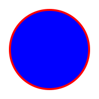

<!--
    SVG <svg>

    É uma marcação, estilo html, mas não é para textos, e sim para fazer imagens.
    Possuimos elementos para gerar formas

    Para entender melhor
    - Imagem rasterizada (pixels - grid) x Imagem vetorizada (via algoritmo)

    Benefícios
    - Mais leve
    - Mais detalhada
    - Maior acessibilidade e SEO
    - Pode ser editada via CSS ou atributos

    Desvantagens
    - Pode ser mais complicado de trabalhar
    - Quanto mais complexa a imagem, mais trabalho para o navegador
    - Navegadores mais antigos não possuem suporte a essa tag

    Para fotografias, ainda prefira usar imagens rasterizadas:

    extensão: .png, .jpg, .jpeg
-->

<!--Imagem pixelada ou rasterizada-->
<!--  -->

<!--Imagem vetorizada-->

<!-- <svg style="background-color: aqua;" width="200" height="200">
    <circle cx="100" cy="100" r="80" stroke="red" 
    stroke-width="6" fill="blue" />
</svg> -->





